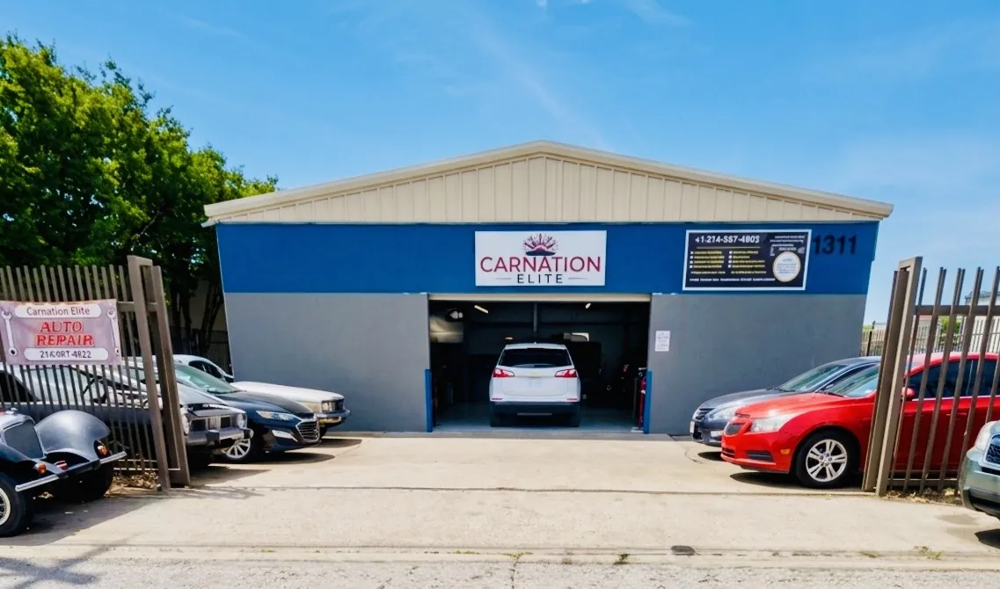

A warning light comes on, the car starts making a noise, and the first question is always the same: how much is this going to cost me? Most shops won't say until the car is on the lift, and a quote that's double what you expected leaves you wondering whether you're being taken for a ride.
This guide puts real 2026 Dallas numbers in front of you: what mechanics charge per hour, what common repairs cost in parts and labor, and how long each one takes.
In 2026, most independent Dallas auto repair shops charge $120–$160 per labor hour, and dealerships often charge close to double that. A routine repair usually costs $150–$600, while major engine or transmission work runs $2,500–$10,000.
- Oil change: $70–$120
- Brake pads (per axle): $150–$300
- Check engine diagnostic: $90–$190
- Battery replacement: $150–$350
- Alternator or starter: $350–$1,100
- AC compressor: $1,000–$2,200
Who wrote this: the technicians at CarNation Elite, serving Northeast Dallas for 15+ years. Our team handles everything from brake jobs to in-house engine and transmission computer (ECM/PCM) diagnostics and programming. Price ranges reflect the work we quote every week, checked against published industry data listed at the bottom of this page.
What Do Mechanics Charge Per Hour in Dallas in 2026?
Labor is usually the largest single line on a repair bill, so the hourly rate is the first number worth knowing. Here's where Dallas sits against the rest of the country:
| Shop type / benchmark | Hourly labor rate (2026) |
|---|---|
| U.S. national average (Tekmetric shop index) | $132/hr |
| Texas average (Tekmetric shop index) | $141/hr |
| Most independent shops, nationally (AAA) | $120–$159/hr |
| Dallas-area independent shops | $120–$160/hr |
| Dallas-area dealerships (often close to double independents) | $200–$300+/hr |
| European and luxury specialists | $160–$250/hr |
| CarNation Elite: most vehicles | $125/hr |
| CarNation Elite: European vehicles | $150/hr |
Dallas ranges are our estimates based on the national data above and local quotes. AAA puts the dealer premium at 25% or more; in our experience quoting against Dallas dealerships, it's often close to double.
How labor charges are calculated
Shops don't bill by stopwatch. Nearly every shop uses a labor guide that lists a standard "book time" for each job on each vehicle. Your labor charge is book time multiplied by the hourly rate, which is why two cars needing the same part can get very different quotes.
2.0 book hours × $125/hr = $250 labor
+ $320 remanufactured alternator = $570 total before tax
Same job at a $250/hr dealership with a $480 factory part = $980
Why Dallas Driving Changes Your Repair Bill
National price guides miss something local drivers already know: North Texas is hard on cars. Three local conditions show up again and again on our repair orders.
- Summer heat. Long stretches of triple-digit days keep AC compressors running nonstop for months and bake batteries from the inside. Heat is a bigger battery killer than cold, so Dallas batteries often fail sooner than the label suggests.
- Stop-and-go highways. Daily crawls on LBJ Freeway (I-635), Central Expressway (US-75) and I-35E wear brake pads and rotors much faster than open-road miles, and add heat to transmissions.
- Hot engine bays. Rubber hoses, belts, gaskets and plastic coolant parts harden and crack faster in our climate, which is why cooling-system leaks are so common here by 80,000–100,000 miles.
The upside: these failures are predictable. Following a Texas-heat maintenance schedule is the cheapest way to keep repair bills small.
Top 5 Reasons Car Repair Costs More in Dallas in 2026
1. Higher labor rates (the most common reason)
Experienced technicians are in short supply, and shops have raised rates to keep them. Industry surveys show the share of U.S. shops charging $140/hr or more has grown steadily, and the Texas average is now above the national one. What to watch for: a quote with high labor hours on a simple job. If you ignore it: you may pay dealer-level labor for work any qualified independent shop can do.
2. Parts prices and tariffs
Car parts and equipment prices were up about 3.8% year over year by spring 2026, and overall maintenance and repair prices rose more than 5%. Imported components, including many sensors, electronics and European parts, have seen the biggest jumps. What to ask: whether your quote uses factory (OEM), quality aftermarket or remanufactured parts. That one choice can swing a bill by hundreds of dollars.
3. More electronics, programming and calibration
Modern cars carry dozens of computer modules. Replacing a part can now require coding, a relearn procedure or a camera and radar calibration before the car works correctly. Warning signs: multiple warning lights at once, a car that runs badly after a battery change, or a module a parts store can't program. If you ignore it: parts get swapped without fixing the root cause. This is the work our shop specializes in, and correct diagnosis here saves more money than anything else on this list.
4. Dallas heat and traffic wear
As covered above, AC, battery, cooling-system and brake repairs come up sooner in North Texas than national averages assume. Warning signs: AC cooling less on hot afternoons, a slow crank on summer mornings, a sweet coolant smell, or grinding brakes. If you ignore it: a $150 brake pad job becomes a $500 pads-and-rotors job, and a small coolant leak can end in an overheated engine.
5. Waiting too long
The single biggest driver of a large bill is delay. Minor problems cascade: a weak battery strains the alternator, a worn belt takes out a water pump, a misfire overheats the catalytic converter. Rule of thumb: if a warning light is flashing, the car is overheating, or the brakes feel different, stop driving and get it checked.
Dallas Auto Repair Price Guide: Parts vs. Labor (2026)
These are typical 2026 Dallas ranges for common sedans and SUVs. Labor hours are standard book times. Luxury, European, diesel and full-size truck repairs often run higher.
| Repair | Parts | Labor (book hours) | Typical Dallas total |
|---|---|---|---|
| Full-synthetic oil change | $35–$70 | 0.3–0.5 hr | $70–$120 |
| Brake pads (per axle) | $50–$150 | 1.0–1.5 hr | $150–$300 |
| Brake pads + rotors (per axle) | $150–$400 | 1.5–2.0 hr | $350–$800 |
| Battery replacement | $130–$280 | 0.3–1.0 hr | $150–$350 |
| Check engine light diagnostic | — | 1.0–1.5 hr | $90–$190 |
| AC recharge + leak check | $40–$100 | 0.5–1.0 hr | $130–$300 |
| AC compressor replacement | $400–$1,100 | 3.0–5.0 hr | $1,000–$2,200 |
| Alternator replacement | $250–$650 | 1.5–3.0 hr | $450–$1,100 |
| Starter replacement | $150–$500 | 1.0–3.0 hr | $350–$1,100 |
| Water pump replacement | $80–$400 | 2.0–5.0 hr | $450–$1,100 |
| Timing belt (4-cylinder) | $150–$350 | 3.0–5.0 hr | $600–$1,200 |
| Engine computer (ECM/PCM) programming | $0–$600 | 1.0–2.0 hr | $150–$800 |
| Catalytic converter | $400–$1,800 | 1.0–2.0 hr | $800–$2,200 |
| Transmission replacement (reman) | $1,500–$3,500 | 6–12 hr | $2,500–$6,000 |
| Engine replacement | $2,000–$5,500 | 10–20 hr | $4,000–$10,000 |
Totals include parts and labor across typical Dallas shop rates, before tax. Estimates, not quotes: your vehicle's make, model, engine and condition set the final price.
What drives the price up or down
- Vehicle: a Corolla and a BMW X5 can need the same repair at two to three times the cost, because of parts prices and how much has to come apart.
- Engine layout: a V6 or a transverse engine can turn a one-hour job into a four-hour one when the part sits behind other components.
- Parts grade: factory parts cost the most; quality aftermarket and remanufactured parts often cost 30–50% less with a solid warranty.
- Related wear: a timing belt job usually includes the water pump and tensioner, because the labor overlaps and doing them together saves a second bill later.
How Long Do Common Repairs Take?
Most repairs at an independent shop are same-day once the car is diagnosed and parts are in stock. Here's what to plan for when you book:
Under 2 hours
Oil change, battery, brake pads, AC recharge, check engine diagnostic.
Same day
Pads and rotors, alternator, starter, water pump, most electrical repairs and module programming.
1–2 days
AC compressor, timing belt, catalytic converter, intermittent electrical faults that need road testing.
3 days to 2 weeks
Transmission or engine replacement, depending on whether a unit has to ship in.
The biggest variable is parts availability. Common parts arrive the same day from Dallas-area warehouses; dealer-only and European parts can take two to five business days. Ask for a time estimate along with your written quote.
Dealership vs. Independent Repair Shop in Dallas
| Dealership | Independent shop | |
|---|---|---|
| Labor rate | Typically $200–$300+/hr | Typically $120–$160/hr |
| Parts | Factory (OEM) only | OEM, aftermarket or reman, your choice |
| Best for | Recalls, factory-warranty repairs, some brand software updates | Maintenance and out-of-warranty repairs on most makes |
| Who you talk to | Service advisor | Often the technician or owner |
If your car is still under factory warranty, use the dealer for covered repairs. Otherwise, a qualified independent shop will usually do the same job for less. Federal law also means routine maintenance at an independent shop doesn't void your new-car warranty, as long as the work is done to the manufacturer's specifications.
How to Tell If a Repair Quote Is Fair
A fair quote is one you can read and check. Before you approve any repair, make sure you have:
- A written, itemized estimate: each part, the labor hours and rate, fees and tax.
- The reason for the repair: what failed and how the shop confirmed it, such as a test result, measurement or photo.
- The parts grade: OEM, aftermarket, remanufactured or used.
- The warranty: how long the parts and the labor are covered.
- What's urgent: ask, "What needs to be fixed now, and what can safely wait?"
Don't compare shops on hourly rate alone. A $110/hr shop that spends four hours chasing a problem ($440) costs more than a $150/hr shop that finds it in two ($300). Compare the total, the parts and the warranty. For a quote over $1,500, a second opinion is reasonable and a good shop won't be offended.
Frequently Asked Questions About Auto Repair Costs in Dallas
How much do mechanics charge per hour in Dallas?
Most independent Dallas repair shops charge about $120 to $160 per labor hour in 2026, and the Texas average tracked by Tekmetric is $141 per hour. Dealerships often charge close to double, around $200 to $300+ per hour. CarNation Elite charges $125 per hour for most vehicles and $150 per hour for European vehicles.
How much does a car diagnostic cost in Dallas?
A check engine light diagnostic in Dallas usually costs $90 to $190, which covers roughly one to one and a half hours of testing. Intermittent electrical or module problems can take longer. CarNation Elite's engine diagnostic is a flat $125. Learn more about check engine light repair costs.
Is a dealership more expensive than an independent repair shop?
Usually, yes. AAA notes that dealer labor runs 25% or more above independent shops, and in Dallas it is often close to double. Dealers also typically install only factory parts. A dealership still makes sense for recalls, factory-warranty repairs and some brand-specific software updates.
How can I tell if a car repair quote is fair?
A fair quote is written and itemized: parts with part numbers or brands, labor hours multiplied by the shop's hourly rate, and any fees and taxes. Compare the total and the warranty rather than the hourly rate alone, and ask the shop to show you the failed part or the test results.
Get a written quote before you spend a dollar
Don't guess at a repair bill. Bring your vehicle to CarNation Elite in Northeast Dallas, or call us for an honest diagnosis and an itemized price before any work starts. Every repair is backed by our 12-month / 12,000-mile parts and labor warranty, and financing is available.
Call (214) 597-4922 Book Appointment